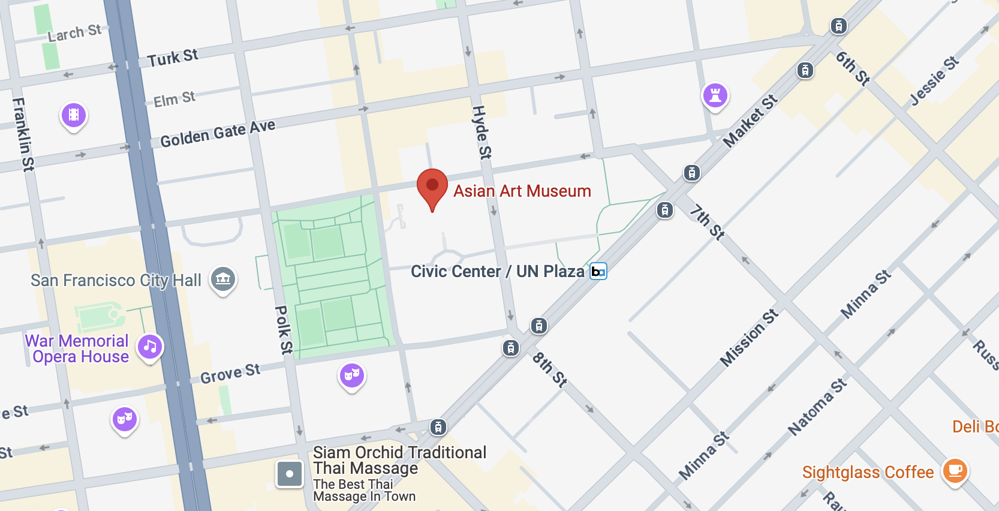
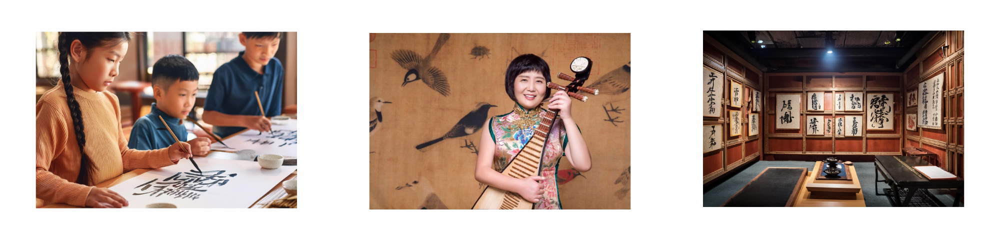
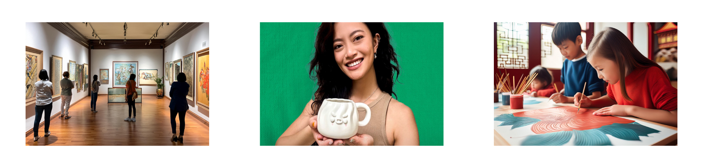
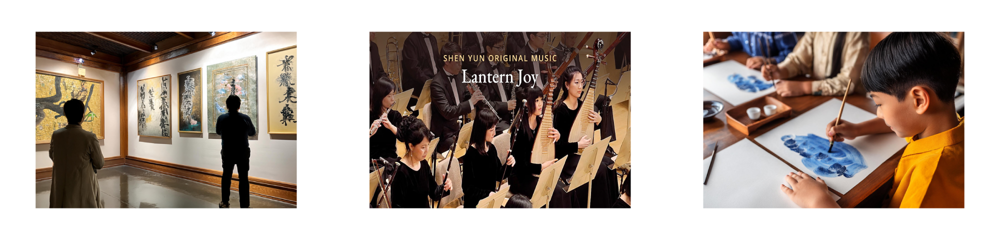

Session Details
活動細節
Claylike Festival Will be taken place at Asian Art Museum from May 1st to 3rd to celebrate not only traditional Chinese heritage but also Asian American and Pacific Islander (AAPI) Heritage Month collectiveely.
The events are very engaging and interactive manner. Each day of the event will represent a differnt technique that people invented centuries ago, yet still being implemented today whether digitally or physically. There would be workshop set up to help demonstrate and allow participants to have hands on experience.
location
地點

200 Larkin St, San Francisco, CA 94102
Event Timeline
時間
10am - 12pm Chinese Calligraphy workshop
1pm - 2:30pm Chinese Traditional Folk Music (pipaist: Gao Hong)
10am - 5pm Exhibition of Chinese Calligraphy
10am - 12pm Court Painting workshop
1pm - 3pm Clay Art Workshop (Guest: Garbo Zhu)
10am - 5pm Exhibition of Court Painting
10am - 12pm Chinese Watercolor workshop
1pm - 3pm Chinese Symphony (Shen Yun Orchstra)
10am - 5pm Exhibition of Watercolor Drawings
Day1
First Floor, Hambrecht Gallery
Third Floor, Galleries 8 - 11
Third Floor, Galleries 13 - 16

Day2
Third Floor, Galleries 8 - 11
First Floor, Hambrecht Gallery
Second Floor, Galleries 17-20

Day3
Third Floor, Galleries 8 - 11
Second Floor, Galleries 17-20
